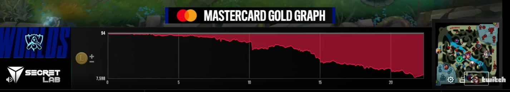
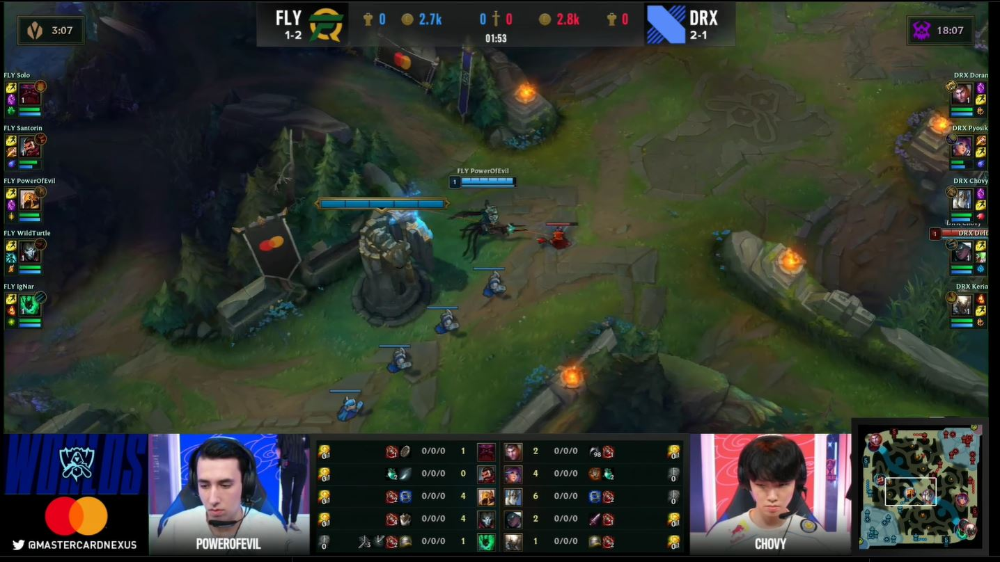

Improving the E-sports Viewing Experience
October 16, 2020
E-sports continues to grow, and is one of the most lucrative fields with the rising trend of content creation and streaming services like Twitch, Facebook and YouTube gaming.
But as the audience base grows as more people look for entertainment at home, it is important to also consider the design and experience for viewers.
The quarterfinals of the League of Legends World Championship just kicked off, and is a great case study in the evolving e-sports scene, as a branding/marketing opportunity with partnerships and also delivering a modern world-class viewing experience. Since the franchising of regional leagues like the LCS (North American League), we have already seen great strides in branding and strategy from gaming organizations, like FlyQuest's recent SeaQuest and TreeQuest campaigns featuring donations to environmental organizations and a 24/7 live aquarium, or Liquid's Liquid+ fan program to engage users more for supporting the brand.
An interesting addition to this year's Worlds event was in-game product placement. Subtle banners were placed all over the rift, showcasing brands like Spotify and Mastercard to viewers, yet out of the way of gameplay. These types of integrated promotions are a great way to gain impressions, especially when they make sense with the game. A great example of this was the gold graph presented by Mastercard:

As a financial product, this segment is relative to both the brand and the game, and is brought up with a nice jingle in the midst of game, representing the gold balance between the teams. This information is very useful for viewers, and is a good example of a successful partnership.
With regards to the overlay, I think there can be improvements to balance the communication of information vs. delivering a good viewing experience.
Here is a screengrab of a regular scene:

To summarize some of the information that is being conveyed:
- The gameplay, front and center
- Top scoreboard, with teams, team score (in bracket), towers, gold, kills, and game-time
- Champion rosters on each side: Name, Champion icon, ultimate status, summoner spells and status, main rune, health and mana bars
- Objective timers in the top corners
- Player cams
- Item board and K/D/A and Creep Score (CS)
- Map
- Branding and promotion banners